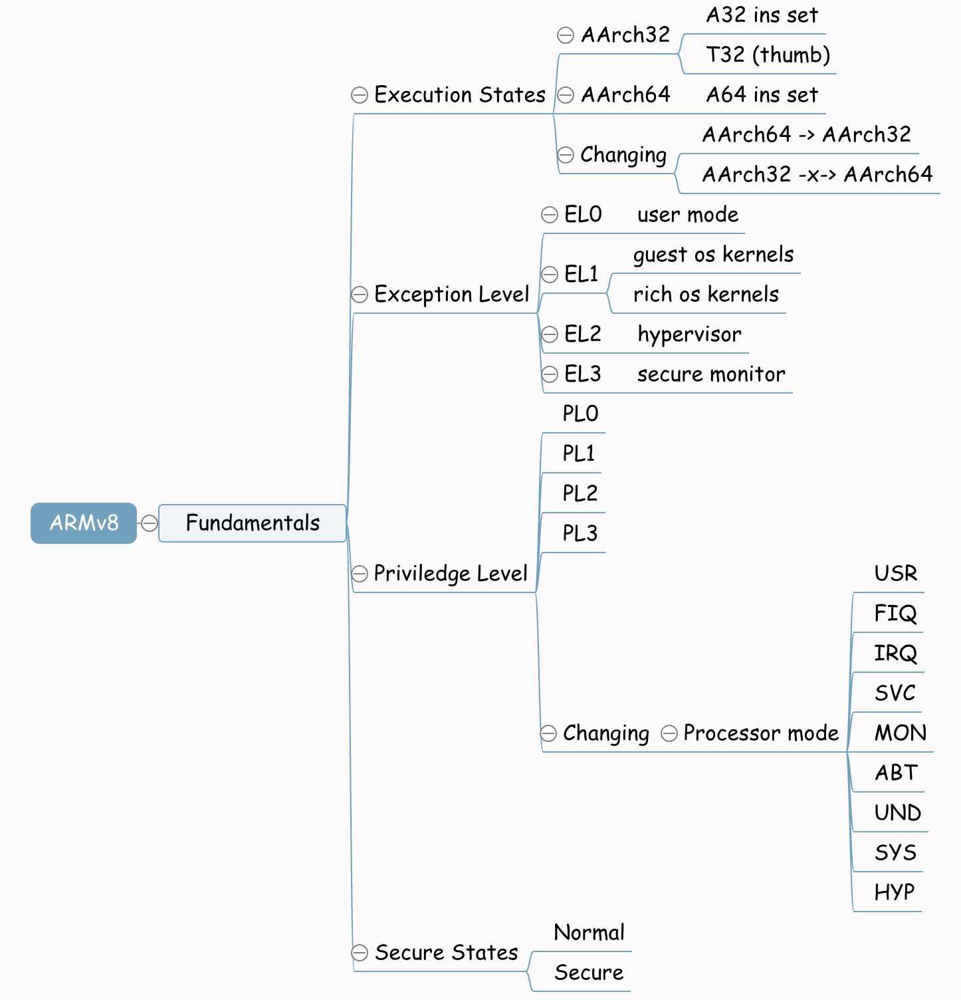
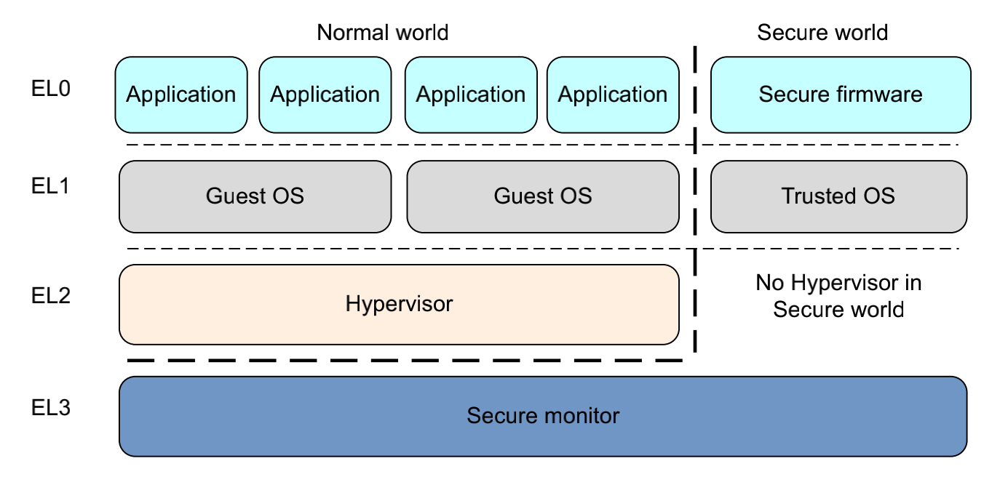

12.4.1. 入口与返回、栈选择、异常向量表

12.4.1.1. 基础知识
12.4.1.1.1. 异常等级
armv8内部包含4个异常等级
EL0: 普通用户等级
EL1: 典型的操作系统内核，这个等级被称为特权等级
EL2: hypervisor
EL3: Low-level固件，例如安全监视器Secure monitor,最高权限
armv8提供了两个状态(secure states),一个叫普通世界(normal world),一个叫安全世界(secure world).这两个世界并行的运行在同个硬件设备上面， 安全世界的工作重心是抵抗软件和硬件的攻击。在EL3的secure monitor,游走于secure world和normal world

在normal world的hypervisor(VMM)代码运行在系统上并且管理着多个guest os,所以每一个操作系统都运行在VMM上面，每个操作系统在同一时间都不知道 有其他操作系统在运行
Guest OS kernel: 这部分分为两类
一般性的操作系统，如linux/windows
在运行hypervisor的情况下，还有一个Rich OS kernel也作为guest os,比如OPTEE-OS
Hypervisor: 总是在normal world， 主要给rich os kernel提供服务
secure firmware: 这段程序必须运行在Boot时间，用于初始化trust os
turst os: 在EL1和Guest Os并行运行，提供一个runtime环境执行安全应用
12.4.1.1.2. 执行状态
armv8定义了两种执行状态，aarch64和aarch32。这两个执行状态和异常等级没有概念上的交织，也就是aarch64和aarch32都有相应的异常等级和特权模式。 在aarch64执行状态时，使用A64指令，在aarch32执行状态时，使用A32或者thumb指令集
12.4.1.2. 异常处理
12.4.1.2.1. 异常类型
interrupt
在aarch64体系架构中有两种类型的中断，IRQ和FIQ. FIQ的优先级高于IRQ
中断线(request line): 这个是对处理器而言的，是中断控制器的输入
中断向量表(vector table): 中断名单，操作系统实现，内部包含中断线对应的IRQ号
对于触发中断，在CPU上有专门的术语，assert一个中断，take一个异常。
aborts
同样包含两种aborts，取指失败(instruction aborts)或者数据访问失败(data aborts)。在内存上，发生这种异常的场景包含两种，在访问内存时，外部存储器 返回一个错误，或者指定访问的地址没有关联到真实的内存中(MMU产生该错误，一个操作系统可以使用MMU abort动态的分配内存给应用程序)
rest
rest异常有者最高的异常等级，当该异常发生的时候arm处理器就会跳转到指令所在的位置。